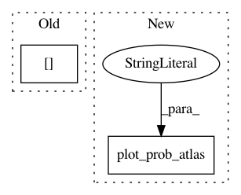

235e5529f9eb0a941b0712b6562308a936cd326f,examples/connectivity/plot_extract_regions_statistical_maps.py,,,#,21
Before Change
from nilearn import plotting
// Visualizing input statistical image
plotting.plot_stat_map(localizer_path.tmaps[2], title="Input data: Statistical t-map")
// Visualizing thresholding results
thresholding_results = {
"Statistical t-map thresholded using percentile": threshold_percentile_img,
After Change
// Visualizing region extraction results
title = ("Region Extraction results on "percentile" thresholded image. "
"\n Each color indicates segmented region")
plotting.plot_prob_atlas(regions_percentile_img, anat_img=tmap_filename,
view_type="contours", display_mode="z",
cut_coords=5, title=title)
title = ("Region Extraction results on "img_value" thresholded image. "
"\n Each color indicates segmented region")
plotting.plot_prob_atlas(regions_value_img, anat_img=tmap_filename,
view_type="contours", display_mode="z",
In pattern: SUPERPATTERN
Frequency: 3
Non-data size: 2
Instances
Project Name: nilearn/nilearn
Commit Name: 235e5529f9eb0a941b0712b6562308a936cd326f
Time: 2015-12-02
Author: dkamalakarreddy@gmail.com
File Name: examples/connectivity/plot_extract_regions_statistical_maps.py
Class Name:
Method Name:
Project Name: nilearn/nilearn
Commit Name: 989ee60856e201cb7bdd0c6c585834e18d528046
Time: 2019-04-16
Author: jacobwvogel@gmail.com
File Name: examples/03_connectivity/plot_compare_decomposition.py
Class Name:
Method Name:
Project Name: nilearn/nilearn
Commit Name: f816b2d21de51ea97a45d8cbece6a528848c56e4
Time: 2019-04-18
Author: gael.varoquaux@normalesup.org
File Name: examples/03_connectivity/plot_compare_decomposition.py
Class Name:
Method Name: